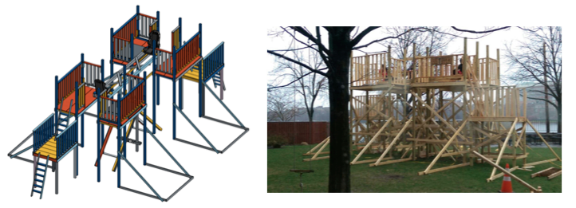

Next Big Tipper
In my freshman year at MIT, a new student group was initiated in my dorm. They built a rope swing in the courtyard. The group was named Next Big Thing and subsequent projects were much larger. I joined the group and worked on all the subsequent projects: a slide (slipper), a zip-line (zipper) and a larger swing (flipper). In the final semester of my junior year, I had the honor to design and lead the construction of a 16 ft. see-saw (tipper).
A large part of project involved interfacting with MIT Environment, Health and Safety (MIT EHS), and the City of Cambridge, as the different groups had different regulations we had to abide by.
I learnt a lot from leading Big Tipper with my co-leaders; I spent quite a lot of time CADing and leading construction. Time management was crucial to the completion of the projects. My woodworking and project planning skills were greatly improved.